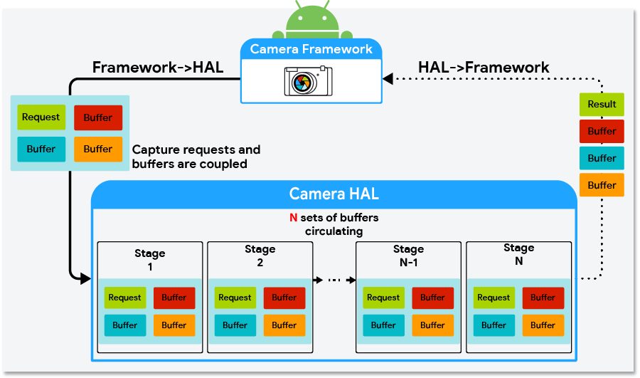
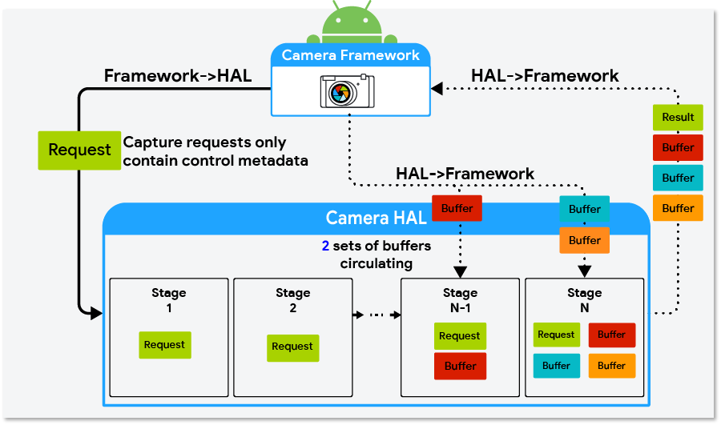
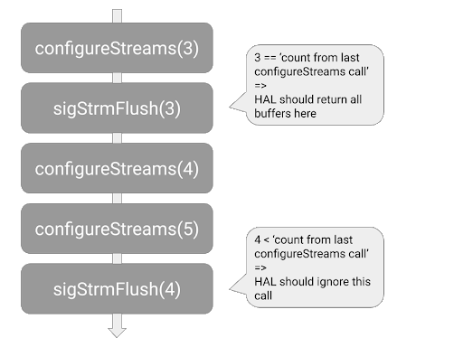

Android 10 introduces optional camera HAL3 buffer management APIs that allow you to implement buffer management logic to achieve different memory and capture latency tradeoffs in camera HAL implementations.
The camera HAL requires N requests (where N is equal to the pipeline depth) queued in its pipeline, but it often doesn't require all N sets of output buffers at the same time.
For example, the HAL might have eight requests queued in the pipeline, but it only requires output buffers for the two requests in the last stages of the pipeline. On devices running Android 9 and lower, the camera framework allocates buffers when the request is queued in the HAL so there could be six sets of buffers in the HAL that aren't in use. In Android 10, the camera HAL3 buffer management APIs allow for the decoupling of the output buffers to free up the six sets of buffers. This can lead to hundreds of megabytes of memory savings on high-end devices and can also be beneficial for low-memory devices.
Figure 1 shows a diagram of the camera HAL interface for devices running Android 9 and lower. Figure 2 shows the camera HAL interface in Android 10 with the camera HAL3 buffer management APIs implemented.

Figure 1. Camera HAL interface in Android 9 and lower

Figure 2. Camera HAL interface in Android 10 using the buffer management APIs
Implementing the buffer management APIs
To implement the buffer management APIs, the camera HAL must:
- Implement HIDL
ICameraDevice@3.5. - Set the camera characteristics key
android.info.supportedBufferManagementVersiontoHIDL_DEVICE_3_5.
The camera HAL uses the
requestStreamBuffers
and
returnStreamBuffers
methods in
ICameraDeviceCallback.hal
to request and return buffers. The HAL must also implement the
signalStreamFlush
method in
ICameraDeviceSession.hal
to signal the camera HAL to return buffers.
requestStreamBuffers
Use the
requestStreamBuffers
method to request buffers from the camera framework. When using the camera HAL3
buffer management APIs, capture requests from the camera framework don't
contain output buffers, that is, the bufferId field in
StreamBuffer
is 0. Therefore, the camera HAL must use requestStreamBuffers to request
buffers from the camera framework.
The requestStreamBuffers method allows the caller to request multiple buffers
from multiple output streams in a single call, allowing for fewer HIDL IPC
calls. However, calls take more time when more buffers are requested at the
same time and this might negatively affect the total request-to-result latency.
Also, because calls into requestStreamBuffers are serialized in the camera
service, it's recommended that the camera HAL use a dedicated high-priority
thread to request buffers.
If a buffer request fails, the camera HAL must be able to properly handle nonfatal errors. The following list describes common reasons that buffer requests fail and how they should be handled by the camera HAL.
- App disconnects from the output stream:
This is a nonfatal error. The camera HAL should send
ERROR_REQUESTfor any capture request targeting a disconnected stream and be ready to process subsequent requests normally. - Timeout: This can occur when an app is busy doing
intensive processing while holding onto some buffers. The camera HAL should
send
ERROR_REQUESTfor capture requests that can't be fulfilled due to a timeout error and be ready to process subsequent requests normally. - Camera framework is preparing a new stream configuration:
The camera HAL should wait until the next
configureStreamscall is complete before callingrequestStreamBuffersagain. - The camera HAL has reached its
buffer limit
(the
maxBuffersfield): The camera HAL should wait until it returns at least one buffer of the stream before callingrequestStreamBuffersagain.
returnStreamBuffers
Use the
returnStreamBuffers
method to return extra buffers to the camera framework. The camera HAL normally
returns buffers to the camera framework through the
processCaptureResult
method, but it can only account for capture requests that have been sent to the
camera HAL. With the requestStreamBuffers method, it's possible for the
camera HAL implementation to retain more buffers than what has been requested by
the camera framework. This is when the returnStreamBuffers method should be
used. If the HAL implementation never holds more buffers than requested, the
camera HAL implementation doesn't need to call the returnStreamBuffers
method.
signalStreamFlush
The
signalStreamFlush
method is called by the camera framework to notify the camera HAL to return all
buffers at hand. This is normally called when the camera framework is about to
call
configureStreams
and must drain the camera capture pipeline. Similar to the returnStreamBuffers
method, if a camera HAL implementation doesn't hold more buffers than
requested, it's possible to have an empty implementation of this method.
After the camera framework calls
signalStreamFlush,
the framework stops sending new capture requests to the camera HAL until all
buffers have been returned to the camera framework. When all buffers are
returned, the requestStreamBuffers method calls fail, and the camera
framework can continue its work in a clean state. The camera framework then
calls either the
configureStreams
or
processCaptureRequest
method. If the camera framework calls the configureStreams method, the camera
HAL can start requesting buffers again after the configureStreams call returns
successfully. If the camera framework calls the processCaptureRequest method,
the camera HAL can start requesting buffers during the processCaptureRequest
call.
The semantics are different for the signalStreamFlush method and the
flush
method. When the flush method is called, the HAL can abort pending capture
requests with
ERROR_REQUEST
to drain the pipeline as soon as possible. When
the signalStreamFlush method is called, the HAL must finish all pending
capture requests normally and return all buffers to the camera framework.
Another difference between the signalStreamFlush method and other methods is
that signalStreamFlush is a one-way HIDL method, which means that the camera
framework might call into other blocking APIs before the HAL receives the
signalStreamFlush call. This means that
the signalStreamFlush method and other methods (specifically the
configureStreams method) might arrive at the camera HAL in a different order
than the order they were called in the camera framework. To address this
asynchrony issue, the streamConfigCounter field was added to
StreamConfiguration and added as an argument to the signalStreamFlush
method. The camera HAL implementation should use the streamConfigCounter
argument to determine whether a signalStreamFlush call arrives later than its
corresponding configureStreams call. See Figure 3 for an example.

Figure 3. How the camera HAL should detect and handle signalStreamFlush calls that arrive late
Behavior changes when implementing the buffer management APIs
When using the buffer management APIs to implement the buffer management logic, consider the following possible behavior changes to the camera and camera HAL implementation:
Capture requests arrive at the camera HAL faster and more frequently: Without buffer management APIs, the camera framework requests output buffers for each capture request before sending a capture request to the camera HAL. When using the buffer management APIs, the camera framework no longer needs to wait for buffers and can therefore send capture requests to the camera HAL earlier.
Also, without buffer management APIs, the camera framework stops sending capture requests if one of the output streams of the capture request has reached the maximum number of buffers that the HAL can hold at one time (this value is designated by the camera HAL in the
HalStream::maxBuffersfield in the return value of aconfigureStreamscall). With the buffer management APIs, this throttling behavior no longer exists and the camera HAL implementation must not acceptprocessCaptureRequestcalls when the HAL has too many capture requests queued.requestStreamBufferscall latency varies significantly: There are many reasons arequestStreamBufferscall might take a longer time than average. For example:- For the first few buffers of a newly created stream, calls can take longer because the device needs to allocate memory.
- The expected latency increases in proportion to the number of buffers requested in each call.
- The app is holding buffers and is busy processing. This can cause buffer requests to slow down or hit a timeout because of a lack of buffers or a busy CPU.
Buffer management strategies
The buffer management APIs allow for different kinds of buffer management strategies to be implemented. Some examples are:
- Backward compatible: The HAL requests buffers for a capture request
during the
processCaptureRequestcall. This strategy doesn't provide any memory savings, but can serve as the first implementation of the buffer management APIs, requiring very few code changes to the existing camera HAL. - Maximized memory savings: The camera HAL only requests output buffers immediately before one is needed to be filled. This strategy allows for maximized memory savings. The potential downside is more camera pipeline jank when buffer requests take an unusually long time to finish.
- Cached: The camera HAL caches a few buffers so that it's less likely to be affected by an occasional slow buffer request.
The camera HAL can adopt different strategies for particular use cases, for example, using the maximized memory saving strategy for use cases that use a lot of memory and using the backward-compatible strategy for other use cases.
Sample implementation in the external camera HAL
The external camera HAL was introduced in Android 9 and can be found in the
source tree at
hardware/interfaces/camera/device/3.5/.
In Android 10, it has been updated to include
ExternalCameraDeviceSession.cpp,
an implementation of the buffer management API. This external camera HAL
implements the maximized memory savings strategy mentioned in Buffer management
strategies in a few hundred lines of
C++ code.